mm7-imgproc2
mm-7 予選迷路画像
33回大会予選でmm-7が撮影した画像と処理結果を紹介します。
予選5回目のトライで得た画像とログをSDカードに残すことが出来ました。
カメラ高さZcと方位角θを変えながら撮影した6枚の画像と逆射影変換した画像です。変換画像に重畳している白い点は、サーチした迷路交点です。
マウスは迷路スタート地点に目分量で45°傾けて置きました。結果の画像を見ると、数度ズレています。変換画像ではこのズレが補正されています。
| 撮影画像 | 逆射影変換画像 |
|---|---|
| Zc=250mm θ=75° 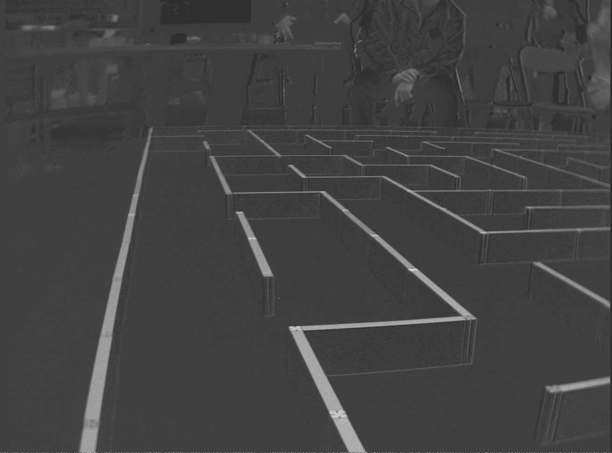 | 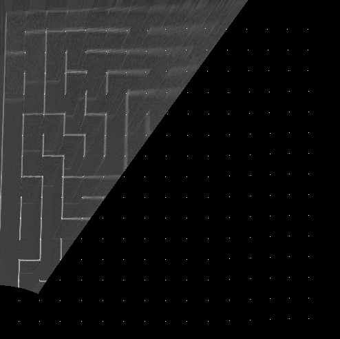 |
| Zc=250mm θ=45° 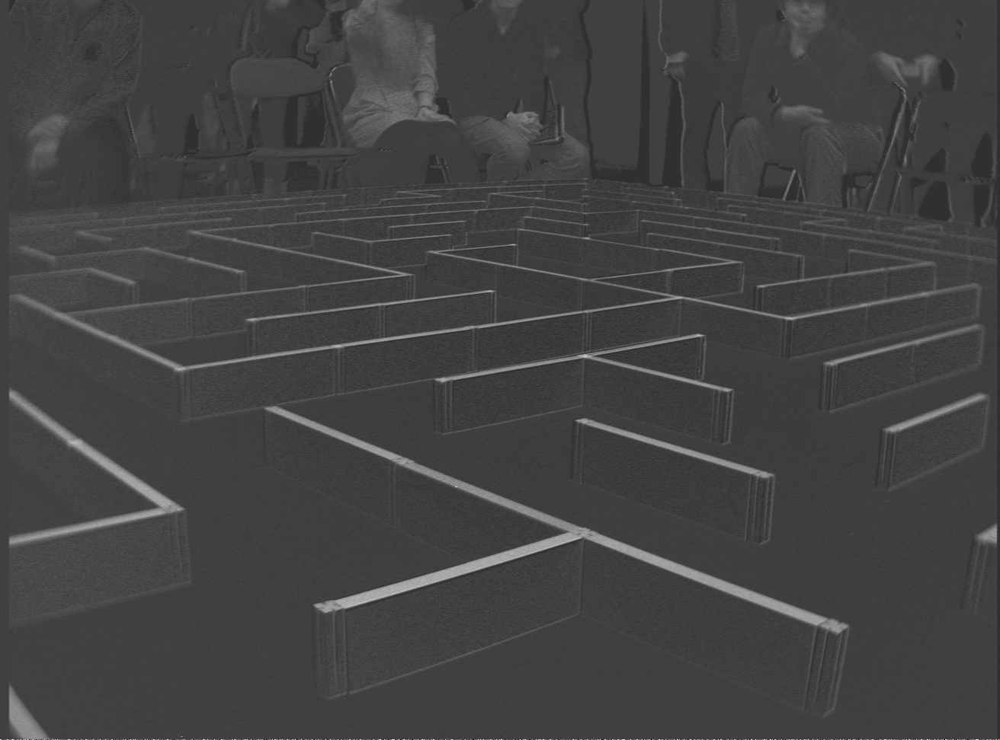 | 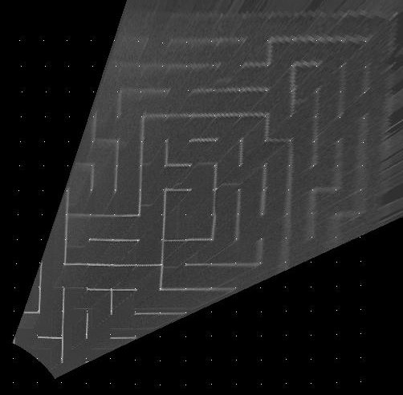 |
| Zc=250mm θ=15° 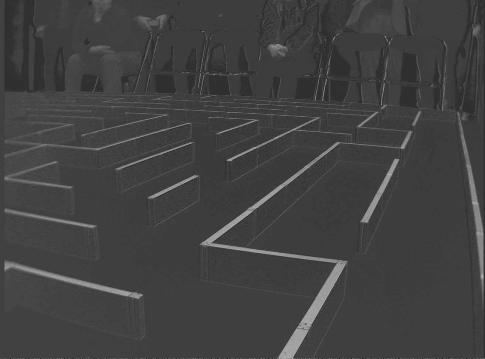 | 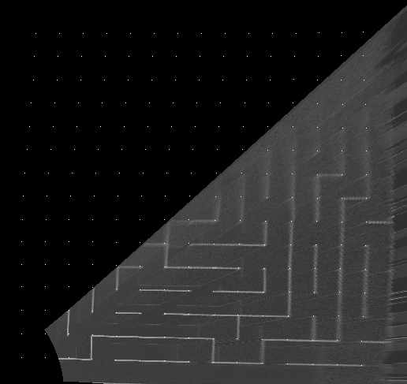 |
| Zc=58mm θ=75° 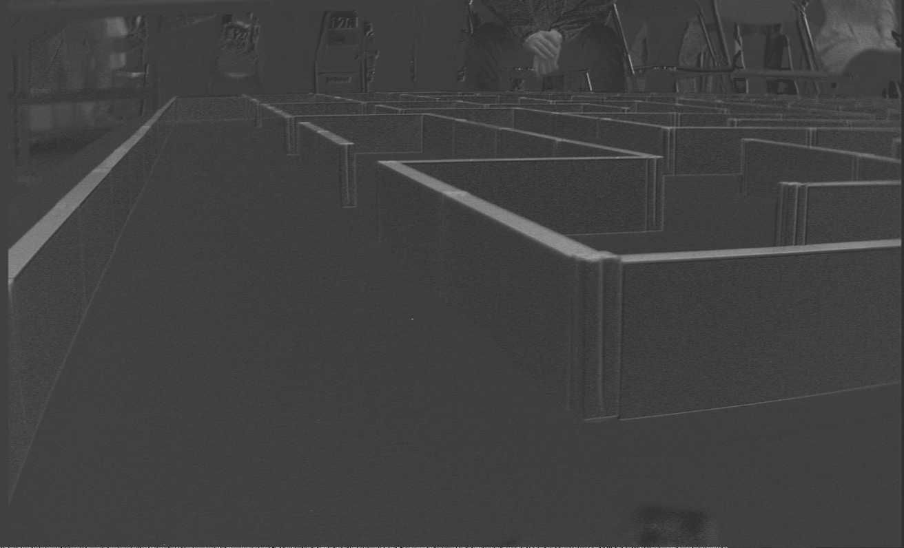 | 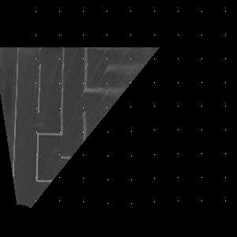 |
| Zc=58mm θ=45° 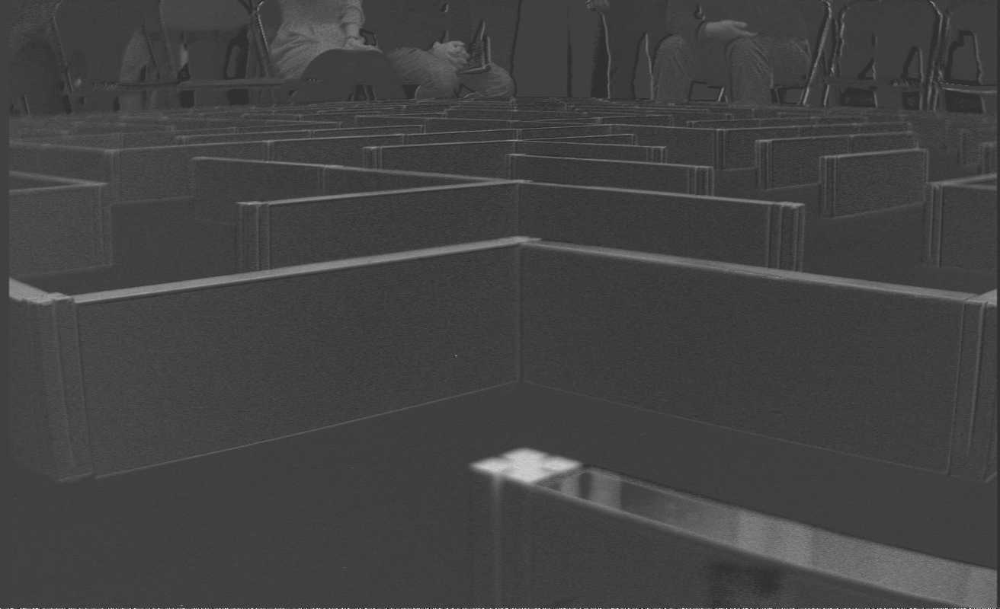 | 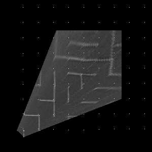 交点があっていないが、自分の近傍の壁判定にのみ用いるのでOK |
| Zc=58mm θ=15° 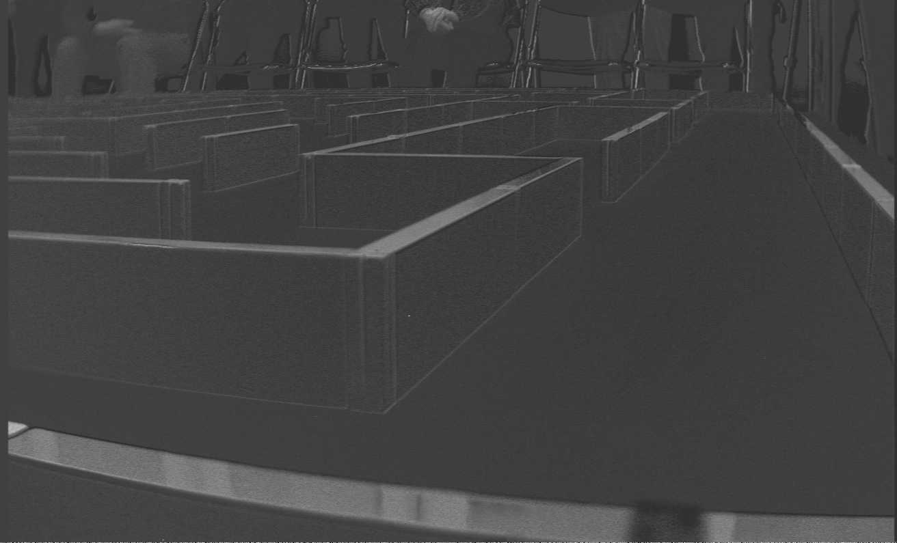 | 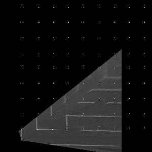 壁の上面が黒く見えている部分がある 外光で白く光っている様だ |
{kind=link}
{kind=link}
{kind=link}
{kind=link}
{kind=link}
{kind=link}
{kind=link}
{kind=link}
{kind=link}
{kind=link}
{kind=link}
{kind=link}
壁判定結果
上記の画像を用いてmm-7が壁を検出した結果です。
{kind=link}
上の Zc=250mm θ=45°の変換画像をみると、見失った(10,11)区画の壁は肉眼ではっきり確認できる。
判定アルゴリズムに問題がある。
撮影画像を見ると画像周辺部のボケがひどく、肉眼で変換画像を見ても壁の認識が困難な部分が目立ちます。
しかし認識の結果は比較的良く、2枚の画像がオーバーラップしている部分で補い合っています。むしろ検出ミスをしたのは目で見てはっきりと壁が認識できる部分で、検出スレッショルドの設定アルゴリズムに問題がありそうです。
また、撮影画像の白い壁と黒い床の境目に細い線が見られます。これはセンサーのベイヤー配列画像から色差画像を作るときの補間処理に簡易なものを用いているための弊害です。今回はこの線が壁の判定を誤らせた箇所は見当たりませんでしたが、迷路の組み合わせによっては問題となる可能性があるので、FPGA内の補間アルゴリズムを改善する必要があります。
カメラ高さZc=58mmで撮影した画像を見ると、外光が反射して白く光り、赤色が消えたと思われる部分があります。偏光フィルタが有効だと思われます。
予選の1回めの走行では、比較的スタートから近い場所で壁に衝突しました。画像が残っていないのでわからないのですが、外光の反射で近傍の壁が抜けてしまった可能性があります。他に判定アルゴリズム上の問題もありえます。
今回、予選前日の試走会で初めてフルサイズ迷路を撮影し、パラメータを調整して予選に臨みました。試走会では天気が悪く、また時間が遅かったこともあり、斜めの外光の影響に気がつきませんでした。
実迷路の画像がなかなか得られないのがきびしいです。
今後の課題
壁判定アルゴリズムは今回得られた画像を分析して改善出来そうです。照明条件はどうなるかわからないので、できる限りロバストにする工夫を重ねないといけません。
もっといろいろな条件での画像が得られるとよいのですが... 今回はSDカードアクセスが遅いため、最後のトライの画像しかセーブ出来ませんでした。カードアクセスを高速化してたくさんの画像を収集出来るようにするべきでした。
画像の周辺ボケ解消には品質の良いレンズを探す必要があります。外光対策に、偏光フィルタの検討も必要です。
また、今回の大会からゴール周囲の壁上面の色が黄色になりました(10/17改訂？)。今回はお願いしてmm-7の出走時だけ赤の壁に戻してもらえましたが、次回は黄色の壁を判定する必要があります。黄色は青の補色ですので、青色差画像で検出することになるでしょうか。